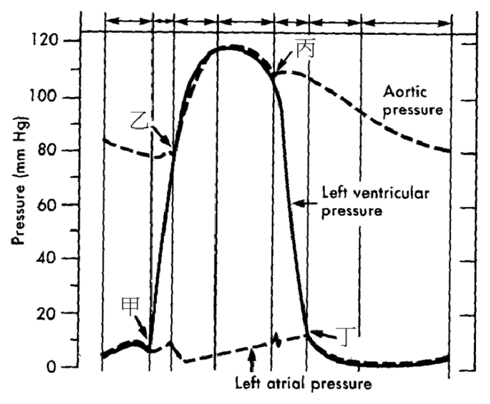

105 年第 2 次護理師基礎醫學（包括解剖學、生理學、病理學、藥理學、微生物學與免疫學）試題與答案
這一頁是民國 105 年第 2 次護理師基礎醫學（包括解剖學、生理學、病理學、藥理學、微生物學與免疫學）的整份歷屆試題，共 80 題，題目與標準答案出自考選部「國家考試試題及測驗式試題答案」開放資料，其中 79 題附有詳解。以下逐題列出題幹、選項與答案；要計時作答或記錄成績，請用線上練習。
考選部原始場次代碼：105090
線上作答這一科 →
全部 80 題
第 1 題
肌肉組織依其位置、構造及控制其收縮之方式不同予以分類，下列何者由平滑肌組成？
- （A）橫膈
- （B）逼尿肌
- （C）上咽縮肌
- （D）肛門外括約肌
答案：（B）
詳解與考點
正解：題眼在「由平滑肌組成」——要依肌肉的構造與自主控制特性辨別。逼尿肌位於膀胱壁，收縮時協助排尿，屬不隨意控制的平滑肌，故選 B。
A：橫膈是呼吸的主要肌肉，構造屬骨骼肌，雖多受自律性呼吸節律調控，仍非平滑肌，故非答案。
C：上咽縮肌為咽部骨骼肌，參與吞嚥時的隨意及反射性動作，故非答案。
D：肛門外括約肌屬骨骼肌，可受意志控制以維持排便控制，故非答案。這是最強誘答——它同樣與排泄有關，但「外」括約肌是隨意控制的骨骼肌，和膀胱逼尿肌不同。
本題考點：平滑肌（smooth muscle）位於內臟與血管壁並多為不隨意控制；逼尿肌（detrusor muscle）收縮促進排尿；骨骼肌（skeletal muscle）具橫紋且多可受意志控制。
第 2 題
胸大肌的肌束呈下列何種方式排列？
- （A）環狀（circular）
- （B）平行（parallel）
- （C）羽毛狀（pennate）
- （D）會聚式（convergent）
答案：（D）
詳解與考點
正解：題眼在「胸大肌的肌束」——要由寬廣起點匯向較狹窄止點的形態判斷。胸大肌的肌束由鎖骨、胸骨與肋軟骨等廣泛起點匯聚至肱骨，屬（D）會聚式排列，故選 D。
A：環狀肌束圍繞開口形成括約功能，例如口輪匝肌，胸大肌不呈環繞開口的形態，故非答案。
B：平行肌束沿長軸大致平行排列，收縮方向較一致；胸大肌起點寬廣而非平行走向，故非答案。
C：羽毛狀肌束斜向附著於肌腱，常見於需要較大力量的肌肉；胸大肌不屬此典型排列，故非答案。這是最強誘答——胸大肌力量大容易讓人聯想到羽毛狀，但分類看的是肌束與肌腱的幾何排列。
本題考點：會聚式肌（convergent muscle）具有寬廣起點與集中止點；胸大肌（pectoralis major）是會聚式肌的代表；肌束排列（fascicle arrangement）影響肌肉收縮方向與力量特性。
第 3 題
生物體最基本的構造與功能單位為何？
- （A）細胞核
- （B）細胞質
- （C）細胞膜
- （D）細胞
答案：（D）
詳解與考點
正解：題眼在「最基本的構造與功能單位」——題目問的是能獨立執行生命活動的完整層級。細胞同時具有細胞膜、細胞質、遺傳物質與代謝機制，是生物體最基本的構造與功能單位，故選 D。
A：細胞核儲存大部分遺傳物質並調控細胞活動，但只是細胞內的胞器，不是完整生命單位，故非答案。
B：細胞質是細胞內進行多項代謝反應的環境，仍須與其他構造共同構成細胞，故非答案。
C：細胞膜負責界定細胞與調節物質進出，卻無法單獨完成生命功能，故非答案。這是最強誘答——細胞膜確實是細胞存活必要構造，但「必要部分」不等於「最基本的完整單位」。
本題考點：細胞（cell）是生物體最基本的構造與功能單位；細胞核（nucleus）、細胞質（cytoplasm）與細胞膜（cell membrane）皆為細胞的組成部分。
第 4 題
抽取骨髓檢體時，常採取髖骨明顯靠近體表之位置，較適合的抽取處為何？
- （A）恥骨肌線
- （B）恥骨弓
- （C）坐骨棘
- （D）髂嵴
答案：（D）
詳解與考點
正解：題眼在「骨髓檢體」與「髖骨明顯靠近體表」——判準是取樣處須有足夠骨髓腔、表淺且避開重要構造。髂嵴易觸及、骨質厚實且可安全進入骨髓腔，是常用的骨髓抽取部位，故選 D。
A：恥骨肌線是恥骨的解剖標誌，並非常用骨髓穿刺位置，故非答案。
B：恥骨弓位於骨盆前方且鄰近泌尿生殖構造，不適合作為常規骨髓抽取處，故非答案。
C：坐骨棘是骨盆內重要的產科定位標誌，位置較深，非骨髓抽取的適切表淺部位，故非答案。這是最強誘答——坐骨棘同屬可觸及的骨盆標誌，但其位置與鄰近構造不符合安全取樣原則。
本題考點：骨髓穿刺（bone marrow aspiration）選擇骨髓腔充足且易定位的部位；髂嵴（iliac crest）是常用取樣位置；安全取樣（safe sampling）須避免深部重要血管、神經與臟器。
第 5 題
為強化骨盆底部的肌肉，產科護理師會請孕婦訓練下列何者之運動？
- （A）提肛肌
- （B）恥骨肌
- （C）子宮肌層
- （D）坐骨海綿體肌
答案：（A）
詳解與考點
正解：題眼在「強化骨盆底部」與「孕婦訓練」——要找構成骨盆底、可藉收縮增進支撐力的肌群。提肛肌構成骨盆隔的主要部分，收縮可協助支撐骨盆臟器並訓練骨盆底功能，故選 A。
B：恥骨肌位於大腿內側，主要作用於髖關節活動，不是骨盆底主要肌群，故非答案。
C：子宮肌層為子宮平滑肌，與胎兒娩出收縮有關，不能作為意識性骨盆底肌力訓練的目標，故非答案。
D：坐骨海綿體肌位於會陰淺層，雖與性功能及會陰構造相關，卻不是承擔骨盆底主要支撐功能的提肛肌，故非答案。這是最強誘答——它名稱含「坐骨」且位於會陰，錯在把局部會陰肌誤作骨盆隔的主力肌。
本題考點：提肛肌（levator ani）是骨盆底（pelvic floor）的主要支撐肌群；骨盆底肌訓練（pelvic floor muscle training）透過反覆自主收縮提升支撐與控制功能。
第 6 題
臉頰穿刺傷造成下顎無法張嘴進食的情況，最可能肇因於下列何者之損傷？
- （A）頰肌
- （B）翼外肌
- （C）降下唇肌
- （D）口輪匝肌
答案：（B）
詳解與考點
正解：題眼在「下顎無法張嘴」——張口需要下顎骨向前與向下移動，主要涉及翼外肌。翼外肌收縮可使下顎前移並協助張口；臉頰穿刺傷若損及（B）翼外肌，最能解釋無法張嘴進食，故選 B。
A：頰肌主要將食物維持在牙齒咬合面並協助吹氣，並非張口的主要肌肉，故非答案。
C：降下唇肌主要使下唇下拉，影響表情，不負責下顎張口，故非答案。
D：口輪匝肌負責閉唇與噘嘴，受傷較可能影響閉唇，不是無法張口的主因，故非答案。這是最強誘答——頰肌位於臉頰、最接近傷口位置，但位置接近不等於它負責題幹所述的張口動作。
本題考點：翼外肌（lateral pterygoid muscle）參與下顎前移與張口；咀嚼肌（muscles of mastication）依動作分工辨識，不能僅按解剖位置推論；頰肌（buccinator muscle）主要協助咀嚼時控制食物位置。
第 7 題
卵巢動脈由下列何者直接分出？
- （A）腹主動脈
- （B）髂內動脈
- （C）子宮動脈
- （D）腸繫膜下動脈
答案：（A）
詳解與考點
正解：題眼在「卵巢動脈由何者直接分出」——要區分卵巢的主要動脈來源與骨盆內的分支供血。卵巢動脈直接由腹主動脈分出，向下進入骨盆供應卵巢，故選 A。
B：髂內動脈供應多數骨盆臟器與骨盆壁，但不是卵巢動脈的直接起源，故非答案。
C：子宮動脈通常為髂內動脈分支，並可與卵巢動脈交通；有交通不表示卵巢動脈由子宮動脈分出，故非答案。這是最強誘答——兩條血管在子宮附件區有吻合支，容易把血流交通誤當成直接分支關係。
D：腸繫膜下動脈主要供應後腸相關構造，與卵巢動脈來源不同，故非答案。
本題考點：卵巢動脈（ovarian artery）直接起自腹主動脈（abdominal aorta）；子宮動脈（uterine artery）多為髂內動脈分支；血管吻合（anastomosis）不等於直接分支。
第 8 題
心臟壁大部分的缺氧血，會先收集到何處，再注入右心房？
- （A）上腔靜脈
- （B）下腔靜脈
- （C）肺靜脈
- （D）冠狀竇
答案：（D）
詳解與考點
正解：題眼在「心臟壁大部分的缺氧血」與「再注入右心房」——這問的是心肌本身的靜脈回流，而非全身或肺部回流。心肌的靜脈血大多先匯入冠狀竇，再由冠狀竇開口流入右心房，故選 D。
A：上腔靜脈收集頭頸、上肢與胸部上半的靜脈血，直接注入右心房，並非心臟壁靜脈血的主要集合處。
B：下腔靜脈收集腹部、骨盆與下肢的靜脈血，亦直接注入右心房，不能取代冠狀竇的回流角色。
C：肺靜脈輸送的是已在肺部完成氣體交換的含氧血，流入左心房；它是最強誘答，因同樣是「靜脈」，但靜脈的命名依血液流向心臟，不等於都帶缺氧血。
本題考點：冠狀循環（coronary circulation）——心肌靜脈血主要經冠狀竇（coronary sinus）回流右心房；肺循環（pulmonary circulation）——肺靜脈回流左心房且帶含氧血。
第 9 題
有關血球功能的敘述，下列何者錯誤？
- （A）紅血球能運送氧氣
- （B）嗜中性球及單核球能吞噬入侵的微生物
- （C）嗜酸性球會釋放組織胺引發過敏反應
- （D）淋巴球能製造抗體
答案：（C）
詳解與考點
正解：題眼在「何者錯誤」與「釋放組織胺」——要辨別過敏反應中各白血球的主要介質。嗜酸性球主要參與寄生蟲防禦及調節過敏反應；大量釋放組織胺、引發立即型過敏反應的主要是嗜鹼性球與肥大細胞，故 C 為應選項。
A：紅血球以血紅素攜帶氧氣，是其主要功能，故非答案。
B：嗜中性球與單核球都具吞噬能力，可清除入侵微生物；單核球進入組織後可分化為巨噬細胞，故正確。
D：B 淋巴球分化為漿細胞後可分泌抗體；選項以淋巴球概括此體液免疫功能，故正確。這是最強誘答，關鍵在於抗體製造是 B 淋巴球系譜的功能，不是所有淋巴球都直接分泌抗體。
本題考點：白血球功能（leukocyte functions）——嗜中性球與單核球負責吞噬；過敏介質（histamine）——主要由嗜鹼性球與肥大細胞釋放；體液免疫（humoral immunity）——B 淋巴球分化後產生抗體。
第 10 題
男性的三段尿道中，由近端至遠端的順序為何？①陰莖段尿道 ②膜段尿道 ③前列腺段尿道
- （A）①②③
- （B）②①③
- （C）①③②
- （D）③②①
答案：（D）
詳解與考點
正解：題眼在「由近端至遠端」——男性尿道須從膀胱頸往陰莖方向依解剖位置排序。尿液離開膀胱後依序通過③前列腺段尿道、②膜段尿道，最後進入①陰莖段尿道，因此順序為③②①，故選 D。
A：①②③把最遠端的陰莖段排在最前，方向與題幹要求相反。
B：②①③以膜段起始，漏掉膀胱出口緊接的前列腺段，故不正確。
C：①③②同樣從遠端開始，且把膜段置於最後，與實際通路不符。這是最強誘答，因③②這一局部順序正確，但前置①後即違反近端到遠端的判準。
本題考點：男性尿道（male urethra）——由近端至遠端為前列腺段、膜段、陰莖段；解剖排序（anatomical orientation）——先確認題目指定的行進方向再排列構造。
第 11 題
腎絲球的微血管屬於下列何種類型？
- （A）竇狀微血管
- （B）孔狀微血管
- （C）連續性微血管
- （D）不連續性微血管
答案：（B）
詳解與考點
正解：題眼在「腎絲球」——此處的微血管必須利於水與小分子溶質濾出，故要找具有窗孔的內皮。腎絲球毛細血管屬孔狀微血管，窗孔配合基底膜與足細胞裂隙形成過濾屏障，故選 B。
A：竇狀微血管的管腔與內皮間隙較大，常見於需要讓較大分子或細胞通行的器官，不是腎絲球的典型構造。
C：連續性微血管內皮完整、通透性較低，常見於肌肉等組織，無法最貼切說明腎絲球的高過濾特性。這是最強誘答，因腎絲球過濾屏障具有選擇性，卻不是連續性內皮。
D：不連續性微血管是描述內皮完整性明顯中斷的型態，與腎絲球的孔狀內皮不符。
本題考點：孔狀微血管（fenestrated capillary）——腎絲球以窗孔提升水與小分子過濾；腎絲球過濾屏障（glomerular filtration barrier）——由內皮、基底膜及足細胞裂隙共同構成。
第 12 題
下列何者不是十二指腸特有的構造？
- （A）肝胰壺腹的開口
- （B）副胰管的開口
- （C）布魯納氏腺（Brunner's gland）
- （D）乳糜管
答案：（D）
詳解與考點
正解：題眼在「不是十二指腸特有」——要區分十二指腸接受膽汁與胰液的構造，和小腸共同的吸收構造。乳糜管位在小腸絨毛內，負責吸收膳食脂質，並非十二指腸獨有，故 D 為應選項。
A：肝胰壺腹開口於十二指腸，是膽管與主胰管將分泌物送入腸道的重要位置，故非答案。
B：副胰管可開口於十二指腸，其開口屬此段腸道的相關構造，故非答案。
C：布魯納氏腺位於十二指腸黏膜下層，分泌鹼性黏液以協助中和胃酸，是十二指腸的辨識特徵。這是最強誘答，因其功能與胃酸有關，但構造位置正是十二指腸而非胃。
本題考點：十二指腸（duodenum）——接受膽汁與胰液，並具布魯納氏腺（Brunner's gland）；乳糜管（lacteal）——為小腸絨毛中的脂質吸收淋巴管。
第 13 題
有關舌頭的敘述，下列何者錯誤？
- （A）味蕾也存在於舌頭以外的區域
- （B）舌上的每個舌乳頭未必皆有味蕾
- （C）舌下神經並不支配所有舌外在肌
- （D）舌下神經並不支配所有舌內在肌
答案：（D）
詳解與考點
正解：題眼在「舌內在肌」與「何者錯誤」——舌下神經支配範圍的例外在舌外在肌，不在舌內在肌。舌內在肌皆由舌下神經支配；舌外在肌中的腭舌肌例外由迷走神經支配，因此 D 的敘述錯誤，故為應選項。
A：味蕾除舌部外，也可見於口腔與咽部的部分區域，故正確。
B：不是每種舌乳頭都有味蕾，例如絲狀乳頭主要具有機械性功能，故正確。
C：舌下神經不支配所有舌外在肌，因腭舌肌由迷走神經支配，故正確。這是最強誘答，因「不支配所有」本身並不代表舌下神經支配很少，而是考例外肌肉。
本題考點：舌下神經（hypoglossal nerve）——支配全部舌內在肌及多數舌外在肌；腭舌肌（palatoglossus）——為舌外在肌的迷走神經支配例外；味蕾（taste bud）——不只分布於舌頭。
第 14 題
下列何者與增加小腸吸收面積無關？
- （A）環形皺襞
- （B）腸脂垂
- （C）微絨毛
- （D）絨毛
答案：（B）
詳解與考點
正解：題眼在「小腸吸收面積」——要找的是不屬於小腸黏膜表面擴增機制的構造。腸脂垂是附著於大腸外表面的脂肪組織，與小腸腔內吸收面積無關，故 B 為應選項。
A：環形皺襞增加小腸內壁表面積，並使食糜行進較慢以利吸收，故非答案。
C：微絨毛位於腸上皮細胞表面，形成刷狀緣，是最細微的一層面積擴增構造，故正確。
D：絨毛向腸腔突出，內含血管與乳糜管，可擴大吸收表面，故正確。這是最強誘答，因乳糜管不是絨毛本身的同義詞，但絨毛確實是增加面積的構造。
本題考點：小腸吸收面積（intestinal absorptive surface）——環形皺襞、絨毛與微絨毛分層擴增；腸脂垂（epiploic appendage）——為大腸外表面的脂肪構造。
第 15 題
車禍導致右眼向外側移動困難並出現複視，最可能傷到下列何者？
- （A）視神經
- （B）動眼神經
- （C）三叉神經
- （D）外展神經
答案：（D）
詳解與考點
正解：題眼在「右眼向外側移動困難」——外轉眼球的主要肌肉是外直肌，其運動神經為外展神經。外展神經受損會使外直肌無力，造成患側眼外轉受限與複視，故選 D。
A：視神經負責視覺傳入，不支配眼外肌；受損主要造成視力或視野問題。
B：動眼神經支配多條眼外肌與瞳孔相關肌肉，受損可有眼球偏位，但不能最直接解釋單純外轉困難。這是最強誘答，因動眼神經確實支配多數眼外肌，分辨關鍵是外直肌例外由外展神經支配。
C：三叉神經主要負責顏面感覺及咀嚼肌運動，非外直肌的運動神經。
本題考點：外展神經（abducens nerve）——支配外直肌（lateral rectus）以使眼球外轉；複視（diplopia）——眼外肌協調失常時常見的症狀。
第 16 題
下列何者是主要連結左右大腦半球的構造？
- （A）內囊
- （B）穹窿
- （C）大腦腳
- （D）胼胝體
答案：（D）
詳解與考點
正解：題眼在「主要連結左右大腦半球」——需找最大且主要的半球間連合纖維束。胼胝體橫跨正中線，連結兩側大腦皮質，是左右大腦半球的主要連合構造，故選 D。
A：內囊是大腦皮質與腦幹、脊髓間的重要投射纖維通路，不是連結兩側半球的主要構造。
B：穹窿主要與海馬迴及邊緣系統的連結有關，並非兩大腦半球最主要的連合束。
C：大腦腳位於中腦腹側，含下行投射纖維，功能重點不是半球間連結。這是最強誘答，因它也是大型白質纖維構造，但纖維走向是大腦至腦幹而非左右橫向。
本題考點：胼胝體（corpus callosum）——左右大腦半球最主要的連合纖維；投射纖維（projection fibers）——連結大腦皮質與較低位中樞，代表構造為內囊與大腦腳。
第 17 題
下列有關水分運輸的敘述何者正確？
- （A）水透過半透膜的擴散作用也稱為滲透
- （B）水從滲透壓高的地方往滲透壓低的地方擴散
- （C）紅血球放入高張溶液後，會因為水進入細胞內而漲大
- （D）水通道是透過次級主動運輸的方式來輸送水分子
答案：（A）
詳解與考點
正解：題眼在「水分運輸」——水跨越選擇性通透膜、由水勢較高處朝較低處移動的被動過程稱為滲透。A 正確描述水透過半透膜的擴散作用，即滲透，故選 A。
B：水會由溶質濃度較低、滲透壓較低的一側，移向溶質濃度較高、滲透壓較高的一側；此項方向顛倒。
C：紅血球置於高張溶液時，水由細胞內移出，細胞會皺縮而非漲大。
D：水通道蛋白使水依濃度梯度進行被動運輸，不需要次級主動運輸提供能量。這是最強誘答，因「通道」容易使人聯想到膜運輸蛋白，但通道本身不代表主動運輸。
本題考點：滲透（osmosis）——水經選擇性通透膜的被動移動；張力（tonicity）——高張溶液使細胞失水皺縮；水通道蛋白（aquaporin）——促進水的被動擴散。
第 18 題
有關紅肌與白肌的敘述，下列何者正確？
- （A）紅肌是無氧肌
- （B）紅肌因含有血紅素而得名
- （C）紅肌比白肌含更多的粒線體
- （D）紅肌纖維一般比白肌纖維粗
答案：（C）
詳解與考點
正解：題眼在「紅肌與白肌」——紅肌以有氧代謝、耐久收縮為特徵，必須具有較多進行氧化磷酸化的粒線體。紅肌比白肌含有更多粒線體，故選 C。
A：紅肌主要採有氧代謝，並非無氧肌；長時間活動時依賴氧化代謝供能。
B：紅肌的紅色主要來自肌紅蛋白與豐富微血管，不是血紅素本身。
D：紅肌纖維通常較細，白肌纖維常較粗且適合快速、強力收縮。這是最強誘答，因纖維粗大似乎代表肌力較佳，但本題判準是耐力與氧化能力而非瞬間力量。
本題考點：紅肌纖維（red muscle fiber）——富含粒線體、肌紅蛋白與微血管，偏有氧耐力代謝；白肌纖維（white muscle fiber）——較適於快速而強力的收縮。
第 19 題
切斷迷走神經最可能會造成下列何種反應？
- （A）心跳加快
- （B）胃液分泌增加
- （C）瞳孔擴大
- （D）排尿反射喪失
答案：（A）
詳解與考點
正解：題眼在「切斷迷走神經」——迷走神經提供心臟主要的副交感抑制作用。切斷後，對竇房結的副交感煞車消失，交感作用相對占優勢，因此心跳加快，故選 A。
B：迷走神經可促進胃腸道分泌與蠕動，切斷後較可能使胃液分泌減少而非增加。
C：瞳孔擴大由交感神經支配，並非迷走神經切斷的主要直接效果。這是最強誘答，因副交感活動下降常讓人聯想到瞳孔變大，但瞳孔的副交感支配主要隨動眼神經而行。
D：排尿反射的副交感傳出主要來自薦髓，切斷迷走神經不會使該反射喪失。
本題考點：迷走神經（vagus nerve）——對心臟提供主要副交感調節，降低心率；自主神經系統（autonomic nervous system）——不同器官的副交感傳出來源不可一概而論。
第 20 題
下列何者不屬於交感神經的起源？
- （A）第一胸脊髓
- （B）第二薦脊髓
- （C）第二腰脊髓
- （D）第一腰脊髓
答案：（B）
詳解與考點
正解：題眼在「不屬於交感神經的起源」——交感神經為胸腰段流出，而薦髓段是副交感神經的重要來源。第二薦脊髓屬薦髓副交感流出，故 B 為應選項。
A：第一胸脊髓屬胸段，符合交感神經胸腰段起源，故非答案。
C：第二腰脊髓屬腰段，符合交感神經起源範圍，故非答案。
D：第一腰脊髓同樣屬胸腰段流出，故非答案。這是最強誘答，因腰薦部在位置上相鄰，但神經系統的分界是胸腰交感與顱薦副交感。
本題考點：交感神經（sympathetic nervous system）——起源為胸腰段流出（thoracolumbar outflow）；副交感神經（parasympathetic nervous system）——具有顱薦段流出（craniosacral outflow）。
第 21 題
腳踩到釘子引起疼痛。關於此痛覺傳遞途徑的敘述，何者錯誤？
- （A）此痛覺傳入之神經纖維由背根進入脊髓
- （B）其初級傳入神經屬於多極神經元
- （C）P 物質（substance P）是其神經傳入脊髓後角，與後角神經元突觸連接的神經傳遞物質之一
- （D）其傳導途徑經過對側之丘腦
答案：（B）
詳解與考點
正解：題眼在「痛覺傳遞途徑」與「何者錯誤」——周邊感覺神經元的細胞體位於背根神經節，形態是偽單極神經元，不是多極神經元。因此 B 錯誤，故為應選項。
A：身體痛覺的初級傳入纖維經背根進入脊髓，與背側感覺傳入的解剖路徑相符，故正確。
C：初級痛覺傳入纖維在脊髓後角與第二級神經元突觸連接時，可釋放 P 物質等神經傳遞物質，故正確。
D：痛覺上行路徑多在脊髓交叉後上行至對側丘腦，故正確。這是最強誘答，因交叉不是在丘腦才發生；分辨關鍵是脊髓交叉後才到對側丘腦。
本題考點：偽單極神經元（pseudounipolar neuron）——背根神經節的初級感覺神經元形態；脊髓丘腦徑（spinothalamic tract）——痛覺在脊髓交叉後上行至對側丘腦；P 物質（substance P）——參與痛覺突觸傳遞。
第 22 題
下列何者並非星狀膠細胞的功能？
- （A）分泌腦脊髓液
- （B）形成血腦障壁
- （C）當中樞神經損傷時，形成疤痕組織
- （D）回收神經末梢釋出之神經傳遞物質
答案：（A）
詳解與考點
正解：題眼在「並非星狀膠細胞的功能」——要區分血腦障壁與神經環境維持的星狀膠細胞，和製造腦脊髓液的脈絡叢上皮。腦脊髓液主要由脈絡叢的特化上皮細胞分泌，非星狀膠細胞功能，故 A 為應選項。
B：星狀膠細胞的終足與腦微血管密切相關，協助維持血腦障壁，故正確。
C：中樞神經系統受損時，星狀膠細胞增生可形成膠質疤痕，故正確。
D：星狀膠細胞可攝取突觸間隙的神經傳遞物質，協助調節神經元周圍環境，故正確。這是最強誘答，因回收不等於神經元本身的突觸再攝取；膠細胞也參與此過程。
本題考點：星狀膠細胞（astrocyte）——維持血腦障壁、形成膠質疤痕並調節神經傳遞物質；脈絡叢（choroid plexus）——主要分泌腦脊髓液（cerebrospinal fluid）。
第 23 題
下列何者之基礎代謝率較正常人顯著增高？
- （A）甲狀腺功能低下患者
- （B）副甲狀腺功能亢進患者
- （C）甲狀腺功能亢進患者
- （D）腎上腺功能低下患者
答案：（C）
詳解與考點
正解：題眼在「基礎代謝率顯著增高」——甲狀腺激素會提高多數組織的能量消耗與產熱。甲狀腺功能亢進使甲狀腺激素作用增加，因此基礎代謝率顯著升高，故選 C。
A：甲狀腺功能低下時代謝活動降低，基礎代謝率傾向下降。
B：副甲狀腺功能亢進的核心是鈣、磷與骨代謝調節異常，不是造成基礎代謝率顯著升高的典型原因。
D：腎上腺功能低下常見疲倦與血壓等調節問題，並非本題所問的典型高基礎代謝狀態。這是最強誘答，因同屬內分泌疾病，但判準是直接提升全身能量代謝的甲狀腺激素。
本題考點：基礎代謝率（basal metabolic rate）——反映靜息狀態的基本能量消耗；甲狀腺功能亢進（hyperthyroidism）——甲狀腺激素增加可提高產熱與基礎代謝率。
第 24 題
請依據下圖回答下列 24〜25 題： 主動脈瓣打開和關閉的時間點分別為：

- （A）甲和乙
- （B）乙和丙
- （C）丙和丁
- （D）丁和甲
答案：（B）
詳解與考點
正解：（B）乙和丙。圖中有三條曲線：粗實線是左心室壓（left ventricular pressure），上方那條由 80 mmHg 升到約 110 mmHg 再緩降的虛線是主動脈壓（aortic pressure），最下方貼近 0～10 mmHg 的低平虛線是左心房壓（left atrial pressure）。四個標記點都落在曲線的交會或轉折處，題眼是「哪一點上左心室壓與主動脈壓的高低關係發生翻轉」——瓣膜的開闔完全由兩側壓力梯度決定，壓力高的一側把瓣膜推開。乙位在左心室壓陡升的那一段與主動脈壓虛線相交之處（約 80 mmHg），此刻左心室壓首度超越主動脈壓，梯度由心室指向主動脈，主動脈瓣被推開，等容收縮期結束、射血期開始。丙位在左心室壓曲線越過高峰、急速下降並與主動脈壓再度交會之處，圖上主動脈壓曲線在此出現一個小凹陷（重搏切跡），這正是左心室壓已降到主動脈壓之下、血液回衝把主動脈瓣關上所留下的痕跡。一開一關恰為乙與丙，故選 B。
A：甲落在圖的左下角，是左心房壓小波之後、左心室壓開始垂直上衝的起點，此處左心室壓剛超過左心房壓，關掉的是二尖瓣而不是主動脈瓣；把（A）甲和乙湊在一起等於把二尖瓣關閉誤認成主動脈瓣的事件，且此時主動脈壓仍高於左心室壓，主動脈瓣不可能是打開的。
C：丙確實是主動脈瓣關閉的時刻，但（C）丙和丁把它擺在「打開」的位置，前後顛倒；丁位在左心室壓已跌到約 10 mmHg 並與左心房壓虛線交會之處，該點左心室壓低於左心房壓，被推開的是二尖瓣、心室充盈期由此開始，與主動脈瓣無關。
D：丁和甲兩點都在圖的底部低壓區，分別是二尖瓣打開與二尖瓣關閉的時間點，（D）整組講的是同一個房室瓣的一開一闔；主動脈瓣的開闔必然發生在 80 mmHg 以上的高壓區，不可能落在這兩點。
本題考點：心動週期壓力曲線的判讀與半月瓣、房室瓣開闔時機的對應。判準只有一條——瓣膜順著壓力梯度開闔，看的是曲線交會點兩側誰高誰低：左心室壓由下往上穿越主動脈壓即主動脈瓣開，由上往下穿越即主動脈瓣關（伴隨重搏切跡）；左心室壓由下往上穿越左心房壓即二尖瓣關，由上往下穿越即二尖瓣開。四個交會點依序為二尖瓣關（甲）、主動脈瓣開（乙）、主動脈瓣關（丙）、二尖瓣開（丁），中間夾出等容收縮期、射血期、等容舒張期與充盈期。臨床上主動脈瓣關閉對應第二心音與重搏切跡，二尖瓣關閉對應第一心音，作答時先在圖上認出三條曲線各是誰，再逐一判斷交會點的穿越方向，即可避開把房室瓣事件與半月瓣事件混用的錯誤配對。
第 25 題待校
請選出心臟最大前負荷（preload）之時間點：
- （A）甲
- （B）乙
- （C）丙
- （D）丁
答案：（A）
第 26 題
腎臟中的何種酵素可活化維他命 D（vitamin D）？
- （A）1-羥化酶（1-hydroxylase）
- （B）1, 25-雙氫氧膽固鈣三醇（1,25-dihydroxycholecalciferol）
- （C）血管張力素轉化酶（angiotensin converting enzyme）
- （D）單胺氧化酶 B（monoamine oxidase B）
答案：（A）
詳解與考點
正解：題眼在「腎臟」與「活化維他命 D」——腎臟負責將前驅物進一步羥化為具活性的形式，此步驟所需的是 1-羥化酶。故選 A。
B：1,25-雙氫氧膽固鈣三醇是活化後的維他命 D 形式，不是執行活化反應的酵素。這是最強誘答，因名稱中含有羥基且與活化直接相關，但要分清楚「產物」與「催化酵素」。
C：血管張力素轉化酶參與腎素－血管張力素系統，將血管張力素 I 轉為血管張力素 II，非維他命 D 活化酵素。
D：單胺氧化酶 B 參與單胺類神經傳遞物質代謝，與維他命 D 活化無關。
本題考點：維他命 D 活化（vitamin D activation）——腎臟以 1-羥化酶（1-hydroxylase）形成活性代謝物；酵素與產物（enzyme versus product）——題目問催化者時不可選反應產物。
第 27 題
下列有關影響懷孕時子宮收縮之陳述，何者正確？
- （A）於妊娠後期，前列腺素有效抑制子宮自發性收縮
- （B）於妊娠前期，催產素有效增加子宮自發性收縮
- （C）於分娩前期，前列腺素引發子宮收縮，發動分娩
- （D）於分娩後期，催產素加速子宮收縮使其回復正常大小
答案：（D）
詳解與考點
正解：題眼在「分娩後期」與「催產素」——產後子宮需要持續收縮以促進復舊並減少出血，催產素可增強子宮收縮。因此 D 正確，故選 D。
A：前列腺素在妊娠末期與子宮頸成熟、子宮收縮的啟動有關，不是有效抑制自發性收縮。
B：妊娠前期子宮對催產素的反應性較低，不宜以催產素有效增加自發性收縮來描述。
C：前列腺素可參與分娩啟動，但「分娩前期」一詞容易混同妊娠末期與實際產程；相較之下，D 對產後催產素促進子宮復舊的敘述最明確。這是最強誘答，方向雖接近，錯在時期表述不精確，不能勝過直接對應產後生理的 D。
本題考點：催產素（oxytocin）——可促進產後子宮收縮與子宮復舊（uterine involution）；前列腺素（prostaglandin）——參與子宮頸成熟及分娩相關子宮收縮；子宮反應性（uterine responsiveness）——隨孕期而變化。
第 28 題
下列何者的血漿清除率（clearance）最接近腎絲球過濾率（glomerular filtration rate）
- （A）菊糖
- （B）代糖
- （C）肝醣
- （D）葡萄糖
答案：（A）
詳解與考點
正解：題眼在「血漿清除率最接近腎絲球過濾率」——需找能自由被腎絲球濾過、在腎小管不被再吸收也不被分泌或代謝的物質。菊糖符合此條件，其清除率可用來測定腎絲球過濾率，故選 A。
B：代糖並非用於定義腎絲球過濾率的標準指標；其腎臟處理方式不符合本題所需的理想條件。
C：肝醣是儲存在組織內的多醣，非循環中可用清除率測量腎絲球過濾率的溶質。
D：葡萄糖雖可被腎絲球濾過，但正常情況下會被腎小管大量再吸收，其清除率不接近腎絲球過濾率。這是最強誘答，因「可濾過」只滿足第一步；判準還要求沒有後續再吸收或分泌。
本題考點：腎絲球過濾率（glomerular filtration rate）——以可自由濾過且不被腎小管處理的物質清除率估計；菊糖清除率（inulin clearance）——最接近腎絲球過濾率；腎小管再吸收（tubular reabsorption）——使葡萄糖清除率低於腎絲球過濾率。
第 29 題
下列何者為潮氣體積（tidal volume）與吸氣儲備體積（inspiratory reserved volume）的總和？
- （A）吸氣容量（inspiratory capacity）
- （B）功能餘氣容量（functional residual capacity）
- （C）肺活量（vital capacity）
- （D）肺總容量（total lung capacity）
答案：（A）
詳解與考點
正解：題眼在「潮氣體積」與「吸氣儲備體積的總和」——呼吸容積的組合公式為吸氣容量＝潮氣體積＋吸氣儲備體積，故選 A。
B：功能餘氣容量是平靜呼氣後仍留在肺內的氣體，組成為呼氣儲備體積加殘氣量，並不包括潮氣體積。
C：肺活量是最大吸氣後可盡力呼出的總量，除潮氣體積與吸氣儲備體積外，還包括呼氣儲備體積。這是最強誘答——它同樣是多個肺容積的總和，但比題幹所問多了一個呼氣儲備體積。
D：肺總容量包含肺活量與殘氣量，是所有肺內氣體的總量，範圍更大。
本題考點：吸氣容量（inspiratory capacity）＝潮氣體積＋吸氣儲備體積；功能餘氣容量（functional residual capacity）＝呼氣儲備體積＋殘氣量；肺活量（vital capacity）不含殘氣量。
第 30 題
一氧化碳與血紅素的親和力約為氧的多少倍？
- （A）0.21
- （B）2.1
- （C）21
- （D）210
答案：（D）
詳解與考點
正解：題眼是「一氧化碳與血紅素的親和力」——一氧化碳會競爭血紅素的氧結合位置，其親和力約為氧的 210 倍，故選 D。這使血紅素不僅難以攜氧，也不易在組織釋放已結合的氧。
A：0.21 倍表示一氧化碳比氧更不易結合血紅素，與一氧化碳中毒造成組織缺氧的機轉相反。
B：2.1 倍雖保留「較高親和力」的方向，但嚴重低估競爭強度，無法說明少量暴露即可明顯影響攜氧。
C：21 倍也是最強誘答——容易把常見的約 210 倍漏掉一個位數；判準是記住一氧化碳對血紅素具有極高親和力。
本題考點：一氧化碳（carbon monoxide）與血紅素（hemoglobin）的親和力約為氧的 210 倍；碳氧血紅素（carboxyhemoglobin）造成血液攜氧下降與組織缺氧。
第 31 題
下列何者是消化道最重要的推進運動？
- （A）蠕動（peristalsis）
- （B）分節運動（segmentation）
- （C）鐘擺運動（pendular movement）
- （D）蠕動的急流（peristaltic rush）
答案：（A）
詳解與考點
正解：題眼在「消化道最重要的推進運動」——要將腸內容物往肛門方向推送，需靠環形肌在食團後方收縮、前方舒張所形成的蠕動，故選 A。
B：分節運動主要反覆分割與混合食糜，使其充分接觸消化液與腸黏膜，推進效果有限。這是最強誘答——它也會造成腸內容物移動，但主要功能是混合而非定向推送。
C：鐘擺運動是縱走肌交替收縮造成的前後擺動，主要協助混合。
D：蠕動的急流是小腸受強烈刺激時出現的快速、長距離推進，屬特殊情況，並非消化道平時最基本且重要的推進形式；勿與結腸的集團運動混淆。
本題考點：蠕動（peristalsis）負責定向推進；分節運動（segmentation）與鐘擺運動（pendular movement）以混合為主；蠕動急流（peristaltic rush）是小腸受強烈刺激時的長距離推送。
第 32 題
在正常的膽汁中，下列何者所占的比率最高？
- （A）水
- （B）膽鹽
- （C）膽色素
- （D）卵磷脂
答案：（A）
詳解與考點
正解：題眼在「正常膽汁中比率最高」——膽汁是肝臟分泌、以水為主要介質的液體，膽鹽、膽色素與磷脂等均溶於其中，故選 A。
B：膽鹽是乳化脂肪及形成微膠粒的重要成分，但屬溶質，含量不高於水。這是最強誘答——它最能代表膽汁的消化功能，卻不是依重量或體積比率最多的成分。
C：膽色素由膽紅素代謝而來，參與膽汁顏色形成，並非主要成分。
D：卵磷脂屬磷脂，可與膽鹽共同協助脂質處理，含量仍低於水。
本題考點：膽汁（bile）的主要成分是水；膽鹽（bile salts）主要乳化脂肪；膽色素（bile pigments）是膽紅素排泄的途徑。
第 33 題
梭狀芽孢桿菌（Clostridium difficile）引起腸道黏膜的病變屬於何種炎症？
- （A）漿液性
- （B）偽膜性
- （C）化膿性
- （D）纖維性
答案：（B）
詳解與考點
正解：題眼是「梭狀芽孢桿菌引起腸道黏膜病變」——Clostridium difficile 毒素會造成黏膜壞死與發炎滲出，表面形成黃白色偽膜，故選 B。
A：漿液性炎症以清澈、蛋白質較少的漿液滲出為主，並非此菌典型的黏膜覆蓋病灶。
C：化膿性炎症以大量嗜中性白血球與膿液為特徵；雖有急性發炎細胞，但無法概括其典型偽膜外觀。
D：纖維性炎症可見纖維蛋白滲出，容易與偽膜混淆；但本題指定病原與腸炎的典型病理診斷是偽膜性。
本題考點：偽膜性腸炎（pseudomembranous colitis）是 Clostridium difficile 感染的典型病變；毒素（toxins）造成腸黏膜發炎、壞死與偽膜形成。
第 34 題
下列何者與血管受傷後的凝血發生最無關？
- （A）血管內皮細胞
- （B）血小板
- （C）紅血球
- （D）纖維蛋白
答案：（C）
詳解與考點
正解：題眼在「血管受傷後的凝血最無關」——止血依賴血管內皮調節、血小板形成初級血栓，以及纖維蛋白穩固血塊；紅血球主要負責運輸氧氣，故選 C。
A：血管內皮受損會暴露促凝訊號，並影響血管收縮與血小板黏附，與止血密切相關。
B：血小板會黏附、活化並聚集，形成初級止血栓，是凝血早期關鍵。
D：纖維蛋白由凝血級聯反應產生，形成網狀結構以穩固血小板血栓。
本題考點：初級止血（primary hemostasis）以血小板（platelets）為核心；次級止血（secondary hemostasis）形成纖維蛋白（fibrin）；紅血球不是凝血反應的主要執行者。
第 35 題
下列何者屬於細胞型過敏免疫反應（cell-mediated hypersensitivity）？
- （A）花粉熱（hay fever）
- （B）古德巴斯德症候群（Goodpasture syndrome）
- （C）血清病（serum sickness）
- （D）結核病（tuberculosis）
答案：（D）
詳解與考點
正解：題眼在「細胞型過敏免疫反應」——第 IV 型過敏反應由 T 細胞媒介、屬延遲型反應；結核病的肉芽腫性免疫反應以此為主，故選 D。
A：花粉熱是 IgE 媒介的立即型第 I 型過敏反應，會引發肥大細胞釋放介質。
B：古德巴斯德症候群是抗體直接攻擊基底膜的第 II 型過敏反應。
C：血清病由循環免疫複合體沉積引起，屬第 III 型過敏反應。這是最強誘答——它也涉及免疫細胞與發炎，但決定分類的是免疫複合體，而不是致敏 T 細胞。
本題考點：第 I 型過敏（type I hypersensitivity）由 IgE 媒介；第 II 型由抗體攻擊細胞或基質；第 III 型為免疫複合體；第 IV 型（cell-mediated hypersensitivity）由 T 細胞媒介。
第 36 題
下列何者並非惡性腫瘤之轉移路徑？
- （A）淋巴轉移
- （B）血路轉移
- （C）播種式轉移
- （D）接觸轉移
答案：（D）
詳解與考點
正解：題眼在「並非惡性腫瘤的轉移路徑」——惡性腫瘤可經淋巴、血行或體腔表面播種擴散；接觸侵入鄰近組織是局部侵犯，不是轉移，故選 D。
A：癌細胞進入淋巴管並抵達區域或遠端淋巴結，屬淋巴轉移。
B：癌細胞侵入血管後隨血流至遠端器官，屬血路轉移。
C：腫瘤細胞脫落於胸膜腔、腹膜腔等體腔表面並著床，屬播種式轉移。
本題考點：淋巴轉移（lymphatic spread）、血路轉移（hematogenous spread）與播種式轉移（transcoelomic spread）均為轉移途徑；局部侵犯（local invasion）不等同轉移。
第 37 題
兒童時期感染的水痘病毒潛伏在人體的神經元細胞，等到成人再復發時會以何種疾病型式表現？
- （A）麻疹（measles）
- （B）德國麻疹（Rubella）
- （C）帶狀皰疹（varicella-zoster）
- （D）玫瑰疹（roseola）
答案：（C）
詳解與考點
正解：題眼在「兒童水痘病毒潛伏於神經元、成人再復發」——水痘－帶狀皰疹病毒會在感覺神經節潛伏，重新活化時沿神經皮節出現帶狀皰疹，故選 C。
A：麻疹由麻疹病毒引起，並非水痘病毒潛伏再活化的表現。
B：德國麻疹由風疹病毒引起，與水痘－帶狀皰疹病毒不同。
D：玫瑰疹多與人類皰疹病毒第 6 或第 7 型相關，病原與潛伏位置皆不同。
本題考點：水痘－帶狀皰疹病毒（varicella-zoster virus）初次感染表現為水痘；神經節潛伏（neuronal latency）後再活化表現為帶狀皰疹（herpes zoster）。
第 38 題
下列何者是正常細胞演變成癌細胞之第一步？
- （A）細胞能長生不死
- （B）細胞能一直不停的自我複製
- （C）細胞能逃脫免疫系統之辨識
- （D）細胞出現突變，且無法被修復
答案：（D）
詳解與考點
正解：題眼是「正常細胞演變成癌細胞的第一步」——癌化起始於 DNA 發生突變且修復或清除失敗，累積的基因異常才可能帶來後續的生長優勢，故選 D。
A：細胞能長生不死是取得複製永生性的後續癌細胞特徵，並非最初事件。
B：持續自我複製需先有生長調控基因異常，屬突變後的促進或進展結果。
C：逃脫免疫辨識是腫瘤演進中的免疫逃脫能力，也要在異常細胞已出現後才有選擇壓力。
本題考點：癌症起始（initiation）涉及 DNA mutation；DNA 修復（DNA repair）失敗使突變保留；腫瘤進展（tumor progression）才逐步出現永生化與免疫逃脫。
第 39 題
下列何種疾病與吸菸較無密切關係？
- （A）腦癌
- （B）慢性支氣管炎及肺氣腫
- （C）肺癌
- （D）心肌梗塞
答案：（A）
詳解與考點
正解：題眼在「與吸菸較無密切關係」——吸菸直接損害呼吸道、促進動脈粥樣硬化，與慢性阻塞性肺病、肺癌及心肌梗塞皆有明確關聯；腦癌並非其典型密切相關疾病，故選 A。
B：慢性支氣管炎及肺氣腫是慢性阻塞性肺病的主要表現，吸菸是重要危險因子。
C：菸草煙霧含多種致癌物，與肺癌發生密切相關。
D：吸菸會增加血管內皮傷害、血栓形成與動脈粥樣硬化風險，因而與心肌梗塞密切相關。
本題考點：吸菸（smoking）是慢性阻塞性肺病（chronic obstructive pulmonary disease）、肺癌（lung cancer）與心血管疾病（cardiovascular disease）的重要可改變危險因子。
第 40 題
下列何者為肺栓子（pulmonary emboli）的最常見來源？
- （A）腹主動脈粥狀硬化
- （B）胸主動脈夾層動脈瘤
- （C）下肢靜脈栓塞
- （D）川崎氏病（Kawasaki disease）
答案：（C）
詳解與考點
正解：題眼在「肺栓子的最常見來源」——多數肺栓塞由下肢深部靜脈血栓脫落後，經靜脈回流、右心再進入肺動脈所致，故選 C。
A：腹主動脈粥狀硬化的栓子循體循環供應下肢或內臟，並不會經右心進入肺動脈。
B：胸主動脈夾層是主動脈壁病變，血流位於體循環動脈端，非肺栓塞常見來源。
D：川崎氏病主要影響中小型血管與冠狀動脈，並非靜脈血栓的典型來源。
本題考點：肺栓塞（pulmonary embolism）最常源自深部靜脈栓塞（deep vein thrombosis）；靜脈栓子經右心（right heart）進入肺動脈。
第 41 題
女性最常罹患之肺癌是下列那一種？
- （A）鱗狀細胞癌（squamous cell carcinoma）
- （B）腺癌（adenocarcinoma）
- （C）小細胞癌（small cell carcinoma）
- （D）大細胞癌（large cell carcinoma）
答案：（B）
詳解與考點
正解：題眼在「女性最常罹患的肺癌」——腺癌是女性及非吸菸者常見的肺癌組織型，通常發生於肺周邊，故選 B。
A：鱗狀細胞癌與吸菸關聯較強，較常位於中央支氣管，並非女性最常見型。
C：小細胞癌惡性度高且多與吸菸有關，常為中央型腫瘤，但不是女性最常見型。
D：大細胞癌是未分化的診斷類別，比例較低。
本題考點：肺腺癌（adenocarcinoma）是女性常見肺癌組織型；鱗狀細胞癌（squamous cell carcinoma）與小細胞癌（small cell carcinoma）較常與吸菸相關並偏中央型。
第 42 題
下列何種白血病，病患體內會出現帶有費城染色體（Philadelphia chromosome）的血球細胞？
- （A）急性淋巴球性白血病（acute lymphocytic leukemia）
- （B）慢性骨髓細胞性白血病（chronic myelocytic leukemia）
- （C）急性骨髓細胞性白血病（acute myelocytic leukemia）
- （D）慢性淋巴球性白血病（chronic lymphocytic leukemia）
答案：（B）
詳解與考點
正解：題眼是「費城染色體」——費城染色體形成 BCR-ABL 融合基因，是慢性骨髓細胞性白血病的典型分子異常，故選 B。
A：急性淋巴球性白血病以淋巴芽細胞增生為主，雖少數個案可能有相關染色體異常，但題目所問典型對應不是此項。
C：急性骨髓細胞性白血病有其他常見的染色體與基因異常，費城染色體不是其典型標記。
D：慢性淋巴球性白血病是成熟 B 淋巴球克隆性增生，通常不以 BCR-ABL 為特徵。
本題考點：費城染色體（Philadelphia chromosome）產生 BCR-ABL fusion gene；慢性骨髓細胞性白血病（chronic myelocytic leukemia）是其典型關聯疾病。
第 43 題
有關 Barrett 食道，下列敘述何者正確？
- （A）是指遠端食道長期的潰瘍不癒
- （B）增加食道發生鱗狀細胞癌的危險
- （C）是因長期胃食道逆流所致
- （D）女性發生的比例高於男性
答案：（C）
詳解與考點
正解：題眼在「Barrett 食道」——長期胃食道逆流使遠端食道鱗狀上皮發生腸型化生，稱為 Barrett 食道，故選 C。
A：它不是單指遠端食道潰瘍久不癒，而是上皮型態改變的化生病變。
B：Barrett 食道增加的是食道腺癌風險，不是鱗狀細胞癌。這是最強誘答——兩者都屬食道癌，但要以化生後的腺性上皮為判準。
D：Barrett 食道較常見於男性，女性比例並非較高。
本題考點：Barrett 食道（Barrett esophagus）由胃食道逆流（gastroesophageal reflux）相關；腸型化生（intestinal metaplasia）增加食道腺癌（esophageal adenocarcinoma）風險。
第 44 題
下列何者較不是肝細胞癌（hepatocellular carcinoma）的好發因子？
- （A）酒精性肝病
- （B）B 型肝炎
- （C）脂肪肝
- （D）C 型肝炎
答案：（C）
詳解與考點
正解：官方答案為 C；題眼在「較不是肝細胞癌好發因子」。依傳統試題分類，酒精性肝病與 B、C 型肝炎是較典型的肝細胞癌危險因子，脂肪肝因而列為相對不典型，故選 C。惟現行臨床已確認脂肪肝相關代謝異常可增加肝細胞癌風險，尤其合併纖維化或肝硬化時；此題的「較不是」屬相對比較，故此判定具時代與分類爭點。
A：酒精性肝病可經慢性肝損傷、纖維化與肝硬化增加肝細胞癌風險，故非答案。
B：慢性 B 型肝炎是肝細胞癌的重要危險因子，甚至可在未進展至肝硬化時增加風險，故非答案。
D：慢性 C 型肝炎可導致長期發炎、纖維化與肝硬化，與肝細胞癌密切相關，故非答案。
本題考點：肝細胞癌（hepatocellular carcinoma）的典型危險因子包括慢性 B 型肝炎（hepatitis B）與 C 型肝炎（hepatitis C）、酒精相關肝病（alcohol-associated liver disease）；脂肪肝相關風險須依現行證據與肝纖維化程度判讀。
第 45 題
子宮腺肌症（adenomyosis）是指子宮肌層內出現下列何種組織？
- （A）子宮內膜
- （B）子宮肌瘤
- （C）宮體腺癌
- （D）子宮頸腺癌
答案：（A）
詳解與考點
正解：題眼在「子宮肌層內出現何種組織」——子宮腺肌症的定義是原本位於子宮內膜的腺體與基質異位至子宮肌層內，故選 A。
B：子宮肌瘤是子宮平滑肌的良性腫瘤，並非子宮內膜組織侵入肌層。
C：宮體腺癌是子宮體部的惡性腺上皮腫瘤，與良性腺肌症不同。
D：子宮頸腺癌起源於子宮頸腺上皮，解剖位置與病理性質皆不符。
本題考點：子宮腺肌症（adenomyosis）是子宮內膜組織（endometrial tissue）位於子宮肌層（myometrium）；子宮肌瘤（leiomyoma）則為平滑肌良性腫瘤。
第 46 題
下列有關水腎（hydronephrosis）之敘述，何者錯誤？
- （A）水腎可經由先天畸形及後天因素形成
- （B）後天因素形成水腎最常見於結石、腫瘤及發炎
- （C）水腎一旦形成後即為不可逆之病理變化
- （D）前列腺肥大及發炎亦可形成水腎
答案：（C）
詳解與考點
正解：題眼在「水腎何者錯誤」——水腎是尿路阻塞造成尿液回流、腎盂腎盞擴張；及早解除阻塞時腎功能與擴張程度可能改善，並非一形成即不可逆，故 C 為應選項。
A：先天性尿路構造異常或後天性阻塞都可能妨礙尿液排出，形成水腎，是正確的。
B：結石、腫瘤及發炎均可能使尿路阻塞，屬常見後天原因，是正確的。
D：前列腺肥大或發炎可造成膀胱出口阻塞，壓力向上傳遞而導致水腎，是正確的。
本題考點：水腎（hydronephrosis）源於尿路阻塞（urinary tract obstruction）；解除阻塞（relief of obstruction）的時機影響可逆性；長期阻塞才可能造成不可逆腎實質損傷。
第 47 題
下列四項檢驗，何者是早期檢驗甲狀腺功能過高（hyperthyroidism）或過低（hypothyroidism），最 敏感的檢驗？
- （A）血清碘（iodine）濃度
- （B）血清甲狀腺刺激素（TSH）濃度
- （C）血清三碘甲狀腺素（T3）濃度
- （D）血清四碘甲狀腺素（T4）濃度
答案：（B）
詳解與考點
正解：題眼是「早期、最敏感檢驗甲狀腺功能過高或過低」——下視丘－腦下垂體－甲狀腺軸具有負回饋，甲狀腺激素剛改變時，腦下垂體分泌的 TSH 通常會先出現反向變化，故選 B。
A：血清碘濃度受攝取與代謝等因素影響，不能直接反映調節軸的功能狀態。
C：T3 在早期異常時未必最先或最穩定改變，敏感度不及 TSH。
D：T4 是重要甲狀腺功能指標，但在初篩與早期偵測中，通常先看 TSH 的回饋變化。這是最強誘答——T4 直接由甲狀腺分泌，表面上最貼近疾病器官；但題目問的是「最敏感」，判準在負回饋。
本題考點：甲狀腺刺激素（thyroid-stimulating hormone, TSH）受負回饋（negative feedback）調節；甲狀腺功能初篩常以 TSH 為敏感指標；T3、T4 用於配合判讀。
第 48 題
有關第二型糖尿病的敘述，下列何者錯誤？
- （A）發病年紀多在青少年
- （B）與人類白血球抗原（human leukocyte antigen）的表現型沒有關聯
- （C）血液中胰島素正常或過多
- （D）蘭氏小島（islets of Langerhans）中的貝他（β）細胞沒有明顯減少
答案：（A）
詳解與考點
正解：官方答案為 A；題眼在「第二型糖尿病何者錯誤」。依傳統教科書的典型型態，第二型糖尿病多於成年後發病，故「發病年紀多在青少年」列為錯誤而選 A；其核心病理是胰島素阻抗與相對胰島素分泌不足。惟隨肥胖與代謝風險增加，第二型糖尿病也可發生於青少年，故本題以年齡作絕對區分有時代性限制。
B：第二型糖尿病不像第一型糖尿病以特定 HLA 相關自體免疫為主要機轉，故此敘述在傳統分類下正確。
C：早期或部分病程中可見胰島素正常或偏高，但組織反應不佳，符合胰島素阻抗。
D：第二型糖尿病早期 β 細胞未必有明顯減少，主要問題是功能失代償；病程進展後仍可能出現 β 細胞功能衰竭。
本題考點：第二型糖尿病（type 2 diabetes mellitus）以胰島素阻抗（insulin resistance）與相對胰島素缺乏為主；第一型糖尿病（type 1 diabetes mellitus）較具自體免疫與 HLA 關聯；發病年齡須依現行流行病學審慎判讀。
第 49 題
某藥的全身清除率（systemic clearance）為 48 mL/min，若要維持血漿濃度為 15 μg/mL，則其靜脈輸 注的速率為多少 μg/min？
- （A）235 μg/min
- （B）340 μg/min
- （C）550 μg/min
- （D）720 μg/min
答案：（D）
詳解與考點
正解：題眼在「全身清除率 48 mL/min」與欲維持的「血漿濃度 15 μg/mL」——穩態靜脈輸注速率等於清除率乘以目標濃度。公式為輸注速率（μg/min）＝清除率（mL/min）×血漿濃度（μg/mL）。代入：48 mL/min × 15 μg/mL=720 μg/min；mL 約去後剩 μg/min，故選 D。
A：235 μg/min 未依清除率與濃度相乘，低估了為補償每分鐘清除量所需的輸注量，故非答案。
B：340 μg/min 與題幹兩個數值相乘的結果不符，故非答案。
C：550 μg/min 同樣不是 48 mL/min 與 15 μg/mL 的乘積。這是最強誘答——數值接近而容易憑直覺估計，但藥物輸注速率必須以單位相消的公式計算，故非答案。
本題考點：全身清除率（systemic clearance）代表單位時間可清除的血漿體積；穩態輸注速率（infusion rate）＝清除率×目標血漿濃度；單位分析（unit analysis）可確認結果為 μg/min。
第 50 題
興奮性飲料所含的咖啡因（Caffeine）主要的作用標的為何？
- （A）Dopamine 受體
- （B）Glutamate 受體
- （C）單胺氧化酶（monoamine oxidase）
- （D）Adenosine 受體
答案：（D）
詳解與考點
正解：題眼是咖啡因（caffeine）作為興奮性飲料成分——其主要作用是拮抗腺苷受體，解除腺苷對中樞神經的抑制作用，使警覺性提高，故選 D。
A：多巴胺受體是部分精神科藥物的重要標的，但不是咖啡因主要產生提神效果的直接標的，故非答案。
B：麩胺酸受體參與興奮性神經傳遞；咖啡因的主要機轉並非直接活化或拮抗此受體，故非答案。
C：抑制單胺氧化酶會影響單胺類神經傳遞物質的代謝，屬另一類藥理機轉。這是最強誘答——同樣可能增加中樞興奮性，但咖啡因是藉腺苷受體拮抗而非抑制單胺氧化酶，故非答案。
本題考點：咖啡因（caffeine）主要拮抗腺苷受體（adenosine receptor）；腺苷通常具有中樞抑制與促進睡眠的作用；受體標的與間接造成的興奮效果須分開判讀。
第 51 題
Lidocaine 的作用機轉為抑制下列何種離子通道？
- （A）鈉離子
- （B）鉀離子
- （C）鈣離子
- （D）氯離子
答案：（A）
詳解與考點
正解：題眼是 Lidocaine 的作用機轉——它是局部麻醉藥，也可作為特定心律不整用藥，核心均為阻斷電壓閘控鈉離子通道，抑制動作電位去極化與傳導，故選 A。
B：鉀離子通道主要參與再極化；阻斷鉀通道是部分抗心律不整藥物的機轉，並非 Lidocaine 的主要機轉，故非答案。
C：鈣離子通道阻斷劑主要影響心肌與平滑肌的鈣離子內流，故非答案。
D：氯離子通道與抑制性神經傳遞相關，Lidocaine 不以此為主要標的。這是最強誘答——各通道都會影響膜電位，但 Lidocaine 特別阻斷的是快速鈉離子內流，故非答案。
本題考點：Lidocaine 為局部麻醉藥（local anesthetic）；電壓閘控鈉離子通道（voltage-gated sodium channel）負責動作電位去極化；通道阻斷會降低神經衝動傳導。
第 52 題
大部分的抗精神病藥物均具有止吐的功能，其原因為何？
- （A）藥物活化位於周邊胃腸道上的血清素 5-HT3 受體
- （B）抑制迷走神經的活性
- （C）藥物作用於腦幹化學感應區（chemoreceptor trigger zone）抑制多巴胺 D2 受體
- （D）藥物有效抑制小腦的平衡功能
答案：（C）
詳解與考點
正解：題眼是「抗精神病藥物」兼具止吐功能——多數藥物可在腦幹化學感應區抑制多巴胺 D2 受體，降低由血中致吐物質觸發的嘔吐訊號，故選 C。
A：5-HT3 受體拮抗可止吐，但活化周邊胃腸道 5-HT3 受體反而可能促進致吐傳遞，故非答案。
B：迷走神經傳入可參與嘔吐反射，但抗精神病藥物的典型止吐機轉不是直接抑制迷走神經活性，故非答案。
D：小腦主要參與協調與平衡，並非抗精神病藥物止吐的主要作用位置。這是最強誘答——平衡系統確會與動暈相關，但本題問的是抗精神病藥物共同的 D2 阻斷機轉，故非答案。
本題考點：化學感應區（chemoreceptor trigger zone）可感受致吐物質；多巴胺 D2 受體（dopamine D2 receptor）阻斷具有止吐作用；抗精神病藥物的不良反應與止吐效果皆與多巴胺路徑有關。
第 53 題
前列腺素的衍生物中，那一個對改善男性陽痿（impotence）最有效？
- （A）Epoprostenol
- （B）Alprostadil
- （C）Dinoprostone
- （D）Latanoprost
答案：（B）
詳解與考點
正解：題眼是「前列腺素衍生物」與男性勃起功能障礙——Alprostadil 為前列腺素 E1 類似物，可使海綿體平滑肌鬆弛並增加局部血流，以改善勃起，故選 B。
A：Epoprostenol 為前列腺素 I2 類似物，主要利用其血管擴張與抑制血小板聚集作用，故非答案。
C：Dinoprostone 為前列腺素 E2 類似物，臨床重點為子宮頸成熟及促進子宮收縮，故非答案。
D：Latanoprost 為前列腺素類似物，主要用於降低眼壓。這是最強誘答——同屬前列腺素衍生物且會影響平滑肌或體液流動，但其作用部位是眼部而非海綿體，故非答案。
本題考點：Alprostadil 為前列腺素 E1 類似物（prostaglandin E1 analog）；勃起依賴海綿體平滑肌鬆弛與血流增加；前列腺素藥物須以受體亞型與主要器官用途鑑別。
第 54 題
下列何者不是組織胺 H1 受體拮抗劑的治療用途？
- （A）動暈症
- （B）失眠症
- （C）季節性鼻炎
- （D）心絞痛
答案：（D）
詳解與考點
正解：題眼在「不是」H1 受體拮抗劑的用途——第一代 H1 抗組織胺可減少過敏症狀，並因進入中樞造成鎮靜，也能預防動暈；心絞痛並非其治療適應症，故選 D。
A：前庭系統的組織胺訊號參與動暈，具中樞作用的 H1 受體拮抗劑可用於預防或緩解動暈，故非答案。
B：部分第一代 H1 受體拮抗劑會造成嗜睡，因而可作為短期失眠的鎮靜選擇，故非答案。
C：季節性鼻炎的打噴嚏、流鼻水等過敏表現可由 H1 受體拮抗劑緩解。這是最強誘答——鼻塞未必完全由組織胺主導，但季節性鼻炎整體仍是 H1 拮抗劑的常見用途，故非答案。
本題考點：H1 受體拮抗劑（H1 receptor antagonist）可用於過敏性鼻炎與蕁麻疹；第一代藥物的中樞鎮靜作用可用於動暈及短期失眠；心絞痛治療重點不在阻斷 H1 受體。
第 55 題
下列何者是治療陣發性心室上心搏過速（PSVT）的首選藥物？
- （A）Adenosine
- （B）Lidocaine
- （C）Mexiletine
- （D）Flecainide
答案：（A）
詳解與考點
正解：題眼是陣發性心室上心搏過速（PSVT）——此類心律不整常涉及房室結迴路，Adenosine 可短暫抑制房室結傳導而終止迴路，因此為首選藥物，故選 A。
B：Lidocaine 主要作用於心室性心律不整，並非 PSVT 的首選處置，故非答案。
C：Mexiletine 與 Lidocaine 同屬鈉離子通道阻斷相關藥物，較偏向心室性心律不整用途，故非答案。
D：Flecainide 可用於特定心律不整的節律控制，但在典型急性 PSVT 的首選判準中不如 Adenosine。這是最強誘答——它同樣是抗心律不整藥物，但關鍵在於能快速、短暫阻斷房室結傳導，故非答案。
本題考點：陣發性心室上心搏過速（paroxysmal supraventricular tachycardia）常與房室結迴路有關；Adenosine 可暫時抑制房室結（atrioventricular node）傳導；抗心律不整藥須依心律不整起源與傳導部位選擇。
第 56 題
患有氣喘的患者不適用下列何種降血壓藥物？
- （A）Methyldopa
- （B）Prazosin
- （C）Nifedipine
- （D）Propranolol
答案：（D）
詳解與考點
正解：題眼是「氣喘」與降血壓藥物——Propranolol 為非選擇性 β 受體阻斷劑，阻斷支氣管 β2 受體會造成支氣管收縮，可能誘發或加重氣喘，故選 D。
A：Methyldopa 以中樞性交感神經抑制降低血壓，並不直接阻斷支氣管 β2 受體，故非答案。
B：Prazosin 阻斷 α1 受體以降低周邊血管阻力，非氣喘的典型禁忌藥理機轉，故非答案。
C：Nifedipine 為鈣離子通道阻斷劑，主要使血管平滑肌鬆弛。這是最強誘答——它也會影響平滑肌，但不會像非選擇性 β 阻斷劑般阻斷支氣管擴張所需的 β2 訊號，故非答案。
本題考點：Propranolol 為非選擇性 β 阻斷劑（nonselective beta blocker）；支氣管 β2 受體活化會造成支氣管擴張；氣喘病人應避免會阻斷 β2 受體的藥物。
第 57 題
下列何種降血壓藥物的藥理作用機轉，與活化中樞神經 α2 受體進而減少交感神經活性有關？
- （A）Clonidine
- （B）Prazosin
- （C）Propranolol
- （D）Nifedipine
答案：（A）
詳解與考點
正解：題眼是「活化中樞神經 α2 受體」並減少交感神經活性——Clonidine 正是中樞 α2 致效劑，可降低交感神經輸出而降血壓，故選 A。
B：Prazosin 為周邊 α1 受體阻斷劑，機轉是降低血管收縮而非活化中樞 α2 受體，故非答案。
C：Propranolol 阻斷 β 受體，降低心跳與腎素相關反應，故非答案。
D：Nifedipine 阻斷 L 型鈣離子通道，主要使血管平滑肌鬆弛。這是最強誘答——同樣能降低交感作用造成的血壓效應，但它不以中樞 α2 受體為直接標的，故非答案。
本題考點：Clonidine 為中樞 α2 致效劑（central alpha-2 agonist）；交感神經輸出（sympathetic outflow）下降可降低血壓；α1 阻斷、β 阻斷與鈣離子通道阻斷須按受體與部位區分。
第 58 題
有關鴉片類止瀉藥物 loperamide 的敘述，下列何者正確？
- （A）會影響中樞神經
- （B）作用機轉為直接抑制大腸平滑肌蠕動，並減少 acetylcholine 釋出
- （C）適合中毒性腹瀉
- （D）能同時吸著氣體、細菌及刺激物
答案：（B）
詳解與考點
正解：題眼是 loperamide 作為鴉片類止瀉藥——它主要作用於腸壁的周邊 μ 鴉片受體，降低腸道蠕動並減少 acetylcholine 釋出，延長內容物停留時間，故選 B。
A：Loperamide 在一般使用下不易產生明顯中樞神經作用，故非答案。
C：中毒性腹瀉可能需排除病原或毒素，抑制腸蠕動反而可能延長毒素停留，不適合使用，故非答案。
D：吸著氣體、細菌與刺激物是吸附性止瀉藥的特性，不是 loperamide 的鴉片受體機轉。這是最強誘答——同樣可緩解腹瀉，卻是完全不同的藥物類別與作用方式，故非答案。
本題考點：Loperamide 為周邊 μ 鴉片受體致效劑（peripheral mu-opioid receptor agonist）；腸道蠕動（intestinal motility）下降可增加水分吸收；感染或中毒性腹瀉須避免不當抑制排除反應。
第 59 題
下列那一種藥物不能抑制甲狀腺激素之生合成？
- （A）propylthiouracil
- （B）methimazole
- （C）高劑量碘化物
- （D）levothyroxine
答案：（D）
詳解與考點
正解：題眼是「不能抑制甲狀腺激素生合成」——Levothyroxine 是甲狀腺素補充製劑，用於補充而非阻斷甲狀腺激素，故選 D。
A：Propylthiouracil 可抑制甲狀腺過氧化酶相關反應，並影響周邊甲狀腺素轉換，故非答案。
B：Methimazole 可抑制甲狀腺過氧化酶相關的合成步驟，故非答案。
C：高劑量碘化物可在特定情境抑制甲狀腺激素的合成與釋放。這是最強誘答——碘是甲狀腺素的原料，卻在高劑量下產生抑制效果，故仍非答案。
本題考點：甲狀腺激素生合成（thyroid hormone synthesis）涉及碘化與偶合反應；抗甲狀腺藥物（antithyroid drugs）可抑制相關酵素步驟；Levothyroxine 為甲狀腺素替代治療（thyroid hormone replacement）。
第 60 題
下列何種藥物用於治療急性痛風患者？
- （A）allopurinol
- （B）probenecid
- （C）colchicine
- （D）sulfinpyrazone
答案：（C）
詳解與考點
正解：題眼是「急性痛風」——急性發作的核心是尿酸鹽結晶引起的急性發炎，Colchicine 可抑制嗜中性白血球相關的發炎反應，適用於急性期治療，故選 C。
A：Allopurinol 抑制尿酸生成，主要用於長期降低尿酸負荷，非急性發作當下的首選，故非答案。
B：Probenecid 促進尿酸排泄，屬慢性期降尿酸策略，故非答案。
D：Sulfinpyrazone 亦為促尿酸排泄藥物，重點在長期尿酸控制。這是最強誘答——它能改善高尿酸血症，卻未直接處理急性關節發炎，故非答案。
本題考點：急性痛風（acute gout）由尿酸鹽結晶引發急性發炎；Colchicine 抑制嗜中性白血球（neutrophil）相關反應；降尿酸治療（urate-lowering therapy）與急性抗發炎治療的時機不同。
第 61 題
抗生素 gentamicin 和 cefazolin 合併使用時可產生抗菌協同作用（synergism），原因為何？
- （A）gentamicin 可以使 cefazolin 不被細菌的 β-lactamase 破壞
- （B）gentamicin 可以使 cefazolin 進入細菌體內的濃度增加
- （C）cefazolin 可以使 gentamicin 容易進入細菌體內產生藥效
- （D）cefazolin 可以減少 gentamicin 由腎臟排出
答案：（C）
詳解與考點
正解：題眼是 gentamicin 與 cefazolin 的抗菌協同作用——Cefazolin 為 β-內醯胺類，先破壞細菌細胞壁，使 gentamicin 更容易進入細胞內結合核糖體發揮抑制蛋白質合成的作用，故選 C。
A：保護 β-內醯胺藥免受 β-lactamase 破壞是 β-lactamase 抑制劑的角色，gentamicin 不具此作用，故非答案。
B：協同的方向相反，是 cefazolin 改變細胞壁後增加 gentamicin 進入，而不是 gentamicin 增加 cefazolin 的胞內濃度，故非答案。
D：減少腎臟排出是改變藥物動力學，不能解釋兩藥在細菌內的典型協同殺菌作用。這是最強誘答——血中濃度升高看似會增強效果，卻也會增加毒性；本題的協同關鍵是細胞壁通透性，故非答案。
本題考點：β-內醯胺類抗生素（beta-lactam antibiotic）抑制細胞壁合成；胺基醣苷類（aminoglycoside）抑制蛋白質合成；抗菌協同作用（antimicrobial synergism）可由細胞壁受損增加藥物進入造成。
第 62 題
下列何者不適用於治療帕金森氏症？
- （A）抗蕈毒性（antimuscarinic）藥物
- （B）抗精神病（antipsychotic）藥物
- （C）B 型單胺氧化酶（MAO B）抑制劑
- （D）兒茶酚甲基轉換酶（COMT）抑制劑
答案：（B）
詳解與考點
正解：題眼是「不適用於治療帕金森氏症」——帕金森氏症的治療方向是增加多巴胺作用或減少膽鹼性相對過強的影響；抗精神病藥物多阻斷多巴胺受體，反而可能造成或惡化錐體外症狀，故選 B。
A：抗蕈毒性藥物可減少膽鹼性作用，對顫抖等症狀有幫助，故非答案。
C：MAO B 抑制劑可減少多巴胺代謝，延長其作用，故非答案。
D：COMT 抑制劑可減少左旋多巴相關代謝，協助延長多巴胺前驅物的效果。這是最強誘答——它不直接致效多巴胺受體，卻能減少代謝而提升治療效果，故非答案。
本題考點：帕金森氏症（Parkinson disease）涉及黑質多巴胺不足；抗精神病藥物（antipsychotics）阻斷多巴胺受體可致錐體外症狀；MAO B 與 COMT 抑制劑（COMT inhibitors）可減少多巴胺相關代謝。
第 63 題
下列何種免疫抑制劑可和細胞內蛋白 cyclophilin 結合，抑制 T 細胞之活化，進而達到免疫抑制作用？
- （A）azathioprine
- （B）mycophenolate mofetil
- （C）prednisone
- （D）cyclosporine
答案：（D）
詳解與考點
正解：題眼是「與 cyclophilin 結合」並抑制 T 細胞活化——Cyclosporine 與細胞內 cyclophilin 結合後抑制 calcineurin，使 T 細胞活化相關訊號降低，故選 D。
A：Azathioprine 干擾嘌呤代謝與核酸合成，並非藉 cyclophilin 作用，故非答案。
B：Mycophenolate mofetil 抑制鳥嘌呤核苷酸合成，降低淋巴球增殖，故非答案。
C：Prednisone 為類固醇，透過廣泛調節發炎與免疫基因表現發揮作用。這是最強誘答——它也能抑制 T 細胞相關免疫反應，但不結合 cyclophilin，故非答案。
本題考點：Cyclosporine 為鈣調神經磷酸酶抑制劑（calcineurin inhibitor）；Cyclophilin 是 cyclosporine 的細胞內結合蛋白；T 細胞活化（T-cell activation）須依賴 calcineurin 相關訊號。
第 64 題
肝臟功能異常的病人使用下列何種抗生素時，因為無法有效代謝此藥物，可能導致藥物血中濃度上 升而產生毒性？
- （A）gentamicin
- （B）ciprofloxacin
- （C）amoxicillin
- （D）erythromycin
答案：（D）
詳解與考點
正解：題眼是「肝臟功能異常」與「無法有效代謝」——Erythromycin 主要經肝臟代謝與膽道排除，肝功能異常時較可能累積而增加毒性風險，故選 D。
A：Gentamicin 主要由腎臟排除，臨床上更需依腎功能評估累積風險，故非答案。
B：Ciprofloxacin 有相當部分經腎臟排除，並非本題所指主要仰賴肝臟代謝的選項，故非答案。
C：Amoxicillin 主要以腎臟排除。這是最強誘答——它同樣是常用抗生素，但其累積風險主要與腎功能而非肝臟代謝能力有關，故非答案。
本題考點：肝臟代謝（hepatic metabolism）下降可增加特定藥物暴露量；Erythromycin 為主要經肝膽途徑處理的巨環類抗生素（macrolide antibiotic）；給藥安全須依藥物清除途徑評估肝腎功能。
第 65 題
下列何種細胞是肉毒桿菌毒素（Botulinum toxin）主要攻擊的對象？
- （A）骨骼細胞
- （B）神經細胞
- （C）呼吸道上皮細胞
- （D）脾臟細胞
答案：（B）
詳解與考點
正解：題眼是肉毒桿菌毒素（Botulinum toxin）的主要攻擊對象——其作用於周邊膽鹼性神經末梢，阻礙 acetylcholine 釋放，使神經肌肉接合處傳遞失效而造成弛緩性麻痺，故選 B。
A：骨骼肌是神經傳遞失效後出現無力的效應器，但毒素主要先作用於神經末梢，故非答案。
C：呼吸道上皮細胞不是肉毒桿菌毒素造成神經肌肉麻痺的主要標的，故非答案。
D：脾臟細胞與免疫反應相關，非此神經毒素的主要攻擊位置。這是最強誘答——呼吸衰竭可能是嚴重後果，卻是呼吸肌失去神經支配所致，不代表毒素直接攻擊呼吸道上皮，故非答案。
本題考點：肉毒桿菌毒素（botulinum toxin）作用於膽鹼性神經末梢（cholinergic nerve terminal）；Acetylcholine 釋放受阻會造成神經肌肉接合處（neuromuscular junction）傳遞失效；臨床表現為弛緩性麻痺。
第 66 題
下列那種溫度可破壞補體的作用？
- （A）25℃
- （B）37℃
- （C）40℃
- （D）56℃
答案：（D）
詳解與考點
正解：題眼是「破壞補體作用」與溫度——補體具有熱不穩定性，實驗室常以 56℃ 加熱使血清補體失活，故選 D。
A：25℃ 接近室溫，無法作為補體失活的標準加熱條件，故非答案。
B：37℃ 為接近人體生理溫度，適合多項補體反應進行，非用來破壞其功能，故非答案。
C：40℃ 雖較生理溫度高，但不足以作為補體熱失活的標準條件。這是最強誘答——它看似已屬高溫，判準卻是補體熱不穩定的特定失活溫度，故非答案。
本題考點：補體（complement）是先天免疫的重要效應系統；補體熱失活（complement inactivation）常用 56℃ 加熱；補體反應與血清學檢驗須辨別補體是否仍具活性。
第 67 題
透過古典途徑（classical pathway）活化補體時，需要以下那一種分子的參與？
- （A）IgE
- （B）IgA
- （C）IgD
- （D）IgM
答案：（D）
詳解與考點
正解：題眼是補體「古典途徑」——此途徑由抗原抗體複合體啟動，IgM 形成複合體後能有效結合 C1 並活化補體，故選 D。
A：IgE 主要參與第一型過敏反應與寄生蟲防禦，非古典補體途徑的典型啟動抗體，故非答案。
B：IgA 主要負責黏膜免疫，不能作為古典途徑的典型啟動分子，故非答案。
C：IgD 主要見於 B 細胞表面作為受體，其功能不在啟動古典補體途徑。這是最強誘答——它與其他選項同為免疫球蛋白，但能有效招募 C1 的抗體類別才符合古典途徑判準，故非答案。
本題考點：古典補體途徑（classical pathway）由抗原抗體複合體啟動；IgM 可有效活化 C1；免疫球蛋白（immunoglobulin）不同類別的效應功能不同。
第 68 題
下列那一種疫苗注射方式，可以最有效而快速的誘發抗體產生？
- （A）低濃度的抗原疫苗
- （B）高濃度的抗原疫苗
- （C）混合佐劑的抗原疫苗
- （D）高純度的蛋白疫苗
答案：（C）
詳解與考點
正解：題眼是「最有效而快速誘發抗體」——佐劑可增強抗原呈現與先天免疫刺激，使對抗原的體液免疫反應更強，因此混合佐劑的抗原疫苗最符合題意，故選 C。
A：僅降低抗原濃度通常不利於產生足夠的免疫刺激，故非答案。
B：提高抗原濃度不必然能如佐劑般改善抗原呈現與免疫活化，故非答案。
D：高純度蛋白抗原可提高成分特異性，但單獨的蛋白抗原未必具有足夠免疫原性。這是最強誘答——純度高聽起來較精準，判準卻是能否增強並加速免疫反應，佐劑更直接符合，故非答案。
本題考點：佐劑（adjuvant）可增強疫苗免疫原性（immunogenicity）；抗原呈現（antigen presentation）影響適應性免疫活化；抗體反應（antibody response）不只取決於抗原濃度或純度。
第 69 題
下列有關後天性免疫（adaptive immunity）的敘述，何者錯誤？
- （A）TH1 只能幫助細胞性免疫反應，不會幫助 B 細胞製造抗體
- （B）IgG 抗體可與自然殺手細胞（natural killer cell）表面的 CD16 結合，幫助自然殺手細胞毒殺標的細 胞，稱為 ADCC（antibody-dependent cellular cytotoxicity）
- （C）TH17 細胞分泌 IL-17，活化上皮細胞與嗜中性細胞（neutrophil），促進發炎反應
- （D）IgG 與 IgM 抗體可活化補體，促進免疫反應
答案：（A）
詳解與考點
正解：題眼在「後天性免疫」與「何者錯誤」——判準是輔助型 T 細胞的功能分工。TH1 的主要功能雖是活化巨噬細胞並支持細胞性免疫，卻不是只能參與此一路徑；其分泌的細胞激素也能協助 B 細胞進行特定類別抗體反應。因此（A）把 TH1 說成完全不會幫助 B 細胞製造抗體，屬絕對化的錯誤敘述，故選 A。
B：IgG 的 Fc 端可與自然殺手細胞表面的 CD16 結合，使自然殺手細胞辨認已被抗體標記的標的細胞並加以毒殺，這就是抗體依賴性細胞毒殺作用，故非答案。
C：TH17 分泌 IL-17，可招募並活化嗜中性細胞與上皮細胞，強化對細胞外病原的發炎反應，故非答案。這是最強誘答——它同時提到多種細胞，容易被誤認為不夠專一；分辨關鍵在於 TH17 的核心正是促進嗜中性細胞主導的發炎反應。
D：IgM 與部分 IgG 抗體能啟動補體的傳統路徑，增強調理、發炎與病原清除，故非答案。
本題考點：後天性免疫（adaptive immunity）中 TH1 與 B 細胞的協作；抗體依賴性細胞毒殺作用（antibody-dependent cellular cytotoxicity，ADCC）；補體傳統路徑（classical complement pathway）。
第 70 題
下列有關自體免疫疾病的成因，何者錯誤？
- （A）全身性紅斑狼瘡（Systemic lupus erythematosus）起因於體內無法清除凋亡細胞，致使細胞核內成 分暴露誘發自體抗體的形成
- （B）微生物感染過程中，微生物抗原可能引發分子模擬（molecular mimicry）機制，致使抗微生物抗原 之抗體攻擊自體器官
- （C）葛瑞夫茲症（Graves' disease）乃自體抗體結合甲狀腺上皮細胞之甲狀腺刺激素受體（thyroid stimulating hormone receptor, TSHR），導致細胞活化增生
- （D）自體免疫引起之糖尿病（autoimmune diabetes）乃自體抗體對胰島 β 細胞的破壞，與 T 細胞無關
答案：（D）
詳解與考點
正解：題眼在「自體免疫疾病的成因」與「何者錯誤」——要辨認免疫耐受失敗是由哪些效應細胞造成。自體免疫性糖尿病的胰島 β 細胞損傷以自體反應性 T 細胞介導的細胞免疫為主，抗體可作為自體免疫的標記或參與反應，卻不能據此說與 T 細胞無關。因此（D）否定 T 細胞的角色錯誤，故選 D。
A：凋亡細胞與其細胞核成分若未妥善清除，核抗原暴露會促進自體抗體形成，是全身性紅斑性狼瘡的致病機轉之一，故非答案。
B：分子模擬是微生物抗原與自體成分具有相似性，免疫反應因交叉反應而傷及自體組織的機轉，故非答案。
C：葛瑞夫茲症的自體抗體可刺激甲狀腺刺激素受體，造成甲狀腺細胞活化與功能亢進，故非答案。這是最強誘答——它看似把「抗體」誤當成破壞性作用；分辨關鍵在於此處抗體是受體致效性刺激，而非細胞毒性破壞。
本題考點：自體免疫（autoimmunity）的免疫耐受失敗；分子模擬（molecular mimicry）；第 1 型糖尿病（type 1 diabetes mellitus）的 T 細胞介導 β 細胞破壞。
第 71 題
下列何者為婦女生殖道中的常在菌叢（normal flora）？
- （A）Streptococcus agalactiae
- （B）Streptococcus pyogenes
- （C）Leuconostoc spp.
- （D）Streptococcus pneumoniae
答案：（A）
詳解與考點
正解：題眼在「婦女生殖道」與「常在菌叢」——要區分可在陰道與腸胃生殖道定殖的菌種，和典型呼吸道或急性感染病原。無乳鏈球菌（Streptococcus agalactiae）可定殖於女性腸胃道與生殖道，是孕期篩檢特別留意的常在菌，因此（A）符合題意，故選 A。
B：化膿性鏈球菌（Streptococcus pyogenes）主要與咽喉炎、猩紅熱及皮膚軟組織感染相關，不是婦女生殖道的典型常在菌，故非答案。
C：Leuconostoc spp. 多見於環境與發酵食品，並非本題所問的婦女生殖道代表性常在菌，故非答案。
D：肺炎鏈球菌（Streptococcus pneumoniae）常定殖於上呼吸道，與肺炎、腦膜炎等感染有關，故非答案。這是最強誘答——同為鏈球菌不代表定殖部位相同，須以典型宿主部位判斷。
本題考點：常在菌叢（normal flora）的部位特異性；無乳鏈球菌（group B Streptococcus）的生殖道定殖；定殖（colonization）與感染（infection）的區別。
第 72 題
化膿性鏈球菌溶血情形屬於那一群？
- （A）α 溶血
- （B）β 溶血
- （C）γ 溶血
- （D）δ 溶血
答案：（B）
詳解與考點
正解：題眼是「化膿性鏈球菌」——此菌即 Streptococcus pyogenes，辨識重點為其在血液瓊脂培養基上造成紅血球完全溶解，周圍形成透明溶血環。完全溶血稱為 β 溶血，所以（B）正確，故選 B。
A：α 溶血是部分溶血，菌落周圍常呈綠色變化，與化膿性鏈球菌的完全溶血不符，故非答案。
C：γ 溶血指不溶血，培養基周圍沒有溶血變化，故非答案。
D：δ 溶血不是本題細菌學常用的標準溶血分類，故非答案。這是最強誘答——名稱看似可與 α、β、γ 並列，但標準判讀只以溶血程度區分。
本題考點：化膿性鏈球菌（Streptococcus pyogenes）；β 溶血（beta-hemolysis）；血液瓊脂培養基（blood agar）的溶血判讀。
第 73 題
下列何者屬於革蘭氏陰性細菌？
- （A）丙酸桿菌（Propionibacterium spp.）
- （B）梭狀芽孢桿菌（Clostridium spp.）
- （C）肉芽腫杯盞狀菌（Claymmatobacterium spp.）
- （D）奴卡氏菌（Nocardia spp.）
答案：（C）
詳解與考點
正解：題眼在「革蘭氏陰性細菌」——判準是細胞壁外膜與革蘭氏染色的分類。肉芽腫杯盞狀菌（Claymmatobacterium spp.）在此題的分類屬革蘭氏陰性菌，因此（C）為應選項，故選 C。
A：丙酸桿菌（Propionibacterium spp.）屬革蘭氏陽性桿菌，常與皮膚菌叢相關，故非答案。
B：梭狀芽孢桿菌（Clostridium spp.）是革蘭氏陽性、可形成芽孢的厭氧桿菌，故非答案。
D：奴卡氏菌（Nocardia spp.）屬革蘭氏陽性分枝狀桿菌，雖可呈弱抗酸性，仍非革蘭氏陰性菌，故非答案。這是最強誘答——弱抗酸性容易讓人以為染色分類不同；抗酸染色與革蘭氏染色是兩個判準。
本題考點：革蘭氏陰性菌（Gram-negative bacteria）的細胞壁分類；革蘭氏陽性桿菌（Gram-positive bacilli）；弱抗酸性（weak acid-fastness）與革蘭氏染色的區別。
第 74 題
下列何者不屬於性接觸細菌傳染病？
- （A）梅毒螺旋體感染
- （B）淋病雙球菌感染
- （C）立克次體菌感染
- （D）披衣菌感染
答案：（C）
詳解與考點
正解：題眼在「不屬於性接觸細菌傳染病」——要以主要傳播途徑判斷，而非只看病原都屬細菌。立克次體菌多經節肢動物媒介傳播，並非以性接觸作為典型傳播方式，因此（C）不屬於題目所列的性接觸細菌傳染病，故選 C。
A：梅毒螺旋體感染主要可經性接觸傳播，故非答案。
B：淋病雙球菌感染是常見的性傳染感染，故非答案。
D：披衣菌感染可經性接觸傳播並造成泌尿生殖道感染，故非答案。這是最強誘答——披衣菌具細胞內寄生特性，容易被誤認為病毒；它仍是細菌性病原。
本題考點：性傳染感染（sexually transmitted infections）；媒介傳播（vector-borne transmission）；立克次體（Rickettsia）的典型傳播途徑。
第 75 題
百日咳菌（Bordetella pertussis）的感染是由吸入感染性飛沫開始，其臨床症狀分三期，於何時期中 菌數會達到最高峰？
- （A）潛伏期（latent stage）
- （B）卡他期（catarrhal stage）
- （C）突發期（paroxymal stage）
- （D）恢復期（convalescent stage）
答案：（B）
詳解與考點
正解：題眼在「百日咳」的三期病程與「菌數最高峰」——卡他期剛出現類感冒症狀時，上呼吸道的百日咳菌量最高，傳染力也最強。進入劇烈陣發性咳嗽後，雖然臨床症狀顯著，菌量已逐漸下降，因此（B）正確，故選 B。
A：潛伏期尚未出現典型臨床表現，題目所問的高菌量傳播期不以此期判定，故非答案。
C：突發期以陣發性咳嗽為特徵，但不等於菌數最高。這是最強誘答——症狀最劇烈很容易被誤當成傳染力最高；百日咳恰須分開看症狀高峰與菌量高峰。
D：恢復期症狀逐漸緩解，菌量也低，故非答案。
本題考點：百日咳（pertussis）的卡他期（catarrhal stage）；病原菌量與傳染力；突發期（paroxysmal stage）的症狀判讀。
第 76 題
抗酸性（acid fast）細菌的細胞壁均富含下列何種物質？
- （A）類固醇（steroids）
- （B）脂胞壁酸（lipoteichoic acid）
- （C）分枝菌酸（mycolic acid）
- （D）脂多糖（lipopolysaccharide）
答案：（C）
詳解與考點
正解：題眼在「抗酸性細菌」——抗酸染色後仍能保留染劑的關鍵，是細胞壁含有大量蠟樣脂質分枝菌酸。分枝菌酸使染劑不易被酸酒精洗脫，也影響藥物進入細胞的特性，故（C）正確，故選 C。
A：類固醇不是抗酸性細菌細胞壁的標誌性成分，故非答案。
B：脂胞壁酸是革蘭氏陽性菌細胞壁相關成分，並非抗酸性的主因，故非答案。
D：脂多糖是革蘭氏陰性菌外膜的成分，與抗酸性細菌的分枝菌酸層不同，故非答案。這是最強誘答——兩者都含脂質，但脂多糖指向革蘭氏陰性菌，分枝菌酸才指向抗酸性。
本題考點：抗酸性（acid-fastness）；分枝菌酸（mycolic acid）；革蘭氏陰性菌外膜的脂多糖（lipopolysaccharide）。
第 77 題
鼻腦接合菌症（Rhinocerebral zygomycosis）主要發生在何種病人？
- （A）愛滋病
- （B）糖尿病
- （C）毒癮患者
- （D）早產兒
答案：（B）
詳解與考點
正解：題眼在「鼻腦接合菌症」——此侵襲性黴菌感染特別與糖尿病控制不佳及代謝失衡相關，容易從鼻竇侵犯眼眶與中樞神經系統。故以危險族群判斷，（B）糖尿病病人最符合，故選 B。
A：愛滋病會增加多種伺機性感染風險，但不是鼻腦接合菌症最具代表性的危險組合，故非答案。
C：毒癮患者可能因不同途徑暴露而有感染風險，卻不是本病的典型宿主特徵，故非答案。
D：早產兒的免疫與皮膚屏障較脆弱，但題幹所指的鼻腦型接合菌症典型危險因子不是早產，故非答案。這是最強誘答——早產兒確實易受感染，但判斷要回到本病與代謝失衡的特異關聯。
本題考點：鼻腦接合菌症（rhinocerebral zygomycosis）；接合菌病（mucormycosis）；糖尿病相關的侵襲性黴菌感染。
第 78 題
人類疱疹病毒中最小的病毒且傳染性極高，主要藉由飛沫或直接接觸傳染的是下列何種病毒？
- （A）小兒麻痺病毒
- （B）巨細胞病毒
- （C）水痘帶狀疱疹病毒
- （D）A 型肝炎病毒
答案：（C）
詳解與考點
正解：題眼在「人類疱疹病毒」、「最小」及「飛沫或直接接觸」——四個選項中只有水痘帶狀疱疹病毒同屬人類疱疹病毒，且具有高度傳染性，可經飛沫與接觸傳播。因此（C）符合題幹，故選 C。
A：小兒麻痺病毒屬腸病毒，主要經糞口途徑傳播，不是疱疹病毒，故非答案。
B：巨細胞病毒雖是人類疱疹病毒，但病毒體較大，且傳播特徵不符合題幹的「最小且高度傳染」線索，故非答案。這是最強誘答——同屬疱疹病毒容易直接入選；仍須用病毒大小與典型傳播特性再收斂。
D：A 型肝炎病毒屬小 RNA 病毒科的肝病毒屬，主要經糞口途徑傳播，不是人類疱疹病毒，故非答案。
本題考點：水痘帶狀疱疹病毒（varicella-zoster virus，VZV）；人類疱疹病毒（human herpesvirus）；飛沫與接觸傳播（droplet and contact transmission）。
第 79 題
A 型肝炎病毒目前依病毒分類又被稱為下列何種病毒？
- （A）腸病毒 71
- （B）腸病毒 72
- （C）腸病毒 73
- （D）腸病毒 74
答案：（B）
詳解與考點
正解：題眼在「A 型肝炎病毒目前依病毒分類」——題目考的是病毒分類命名，不是臨床症狀或傳播途徑。官方答案為 B；惟「腸病毒 72」是舊式分類名稱，現行病毒分類已將 A 型肝炎病毒歸為小 RNA 病毒科的肝病毒屬，不宜把此舊稱當作現行命名。依本題官方答案，選 B。
A：腸病毒 71 是另一種腸病毒型別，與題目採用的舊式 A 型肝炎病毒分類不符，故非答案。
C：腸病毒 73 不是題目所採用的 A 型肝炎病毒舊稱，故非答案。
D：腸病毒 74 同樣不是題目所採用的分類名稱，故非答案。這是最強誘答——四個選項只有型別數字不同，必須精確辨識題庫採用的是舊分類，不能把它與現行分類混用。
本題考點：A 型肝炎病毒（hepatitis A virus，HAV）；腸病毒 72（enterovirus 72）的歷史分類；病毒分類（viral taxonomy）的更新性。
第 80 題
所謂游泳癢（swimmer's itch）是因感染下列那種寄生蟲所引起的疾病？
- （A）日本住血吸蟲（Schistosoma japonicum）
- （B）非人類血吸蟲
- （C）十二指腸鉤蟲（Ancylostoma duodenale）
- （D）美洲鉤蟲（Necator americanus）
答案：（B）
詳解與考點
正解：題眼在「游泳癢」——這是人在淡水接觸非人類血吸蟲尾蚴後，尾蚴短暫侵入皮膚引起的搔癢性皮膚炎；人並非其適合完成生活史的宿主。故（B）非人類血吸蟲最符合，故選 B。
A：日本住血吸蟲可感染人類並造成血吸蟲病，但不是一般所稱游泳癢的典型非人類尾蚴來源，故非答案。
C、D：十二指腸鉤蟲與美洲鉤蟲也可經皮膚侵入，但造成的是鉤蟲感染，不能以游泳癢這個特定名詞概括，故非答案。這是最強誘答——都涉及皮膚接觸土壤或水體後的侵入，差別在於游泳癢指非人類血吸蟲尾蚴造成的皮膚炎。
本題考點：游泳癢（swimmer's itch）；尾蚴皮膚炎（cercarial dermatitis）；非人類血吸蟲（nonhuman schistosomes）的意外宿主感染。
其他年度
回到護理師基礎醫學（包括解剖學、生理學、病理學、藥理學、微生物學與免疫學）的年度總覽，
或到護理師題庫首頁看其他科目。
題目與標準答案出自考選部「國家考試試題及測驗式試題答案」開放資料。依中華民國《著作權法》第 9 條第 1 項第 5 款，
依法令舉行之各類考試試題不得為著作權之標的，得自由利用。詳解為 AI 整理的學習輔助，
並非官方標準答案；中華民國法規會修訂，引用前請對照現行版本查證。